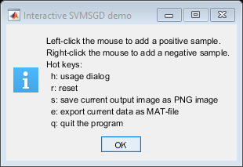
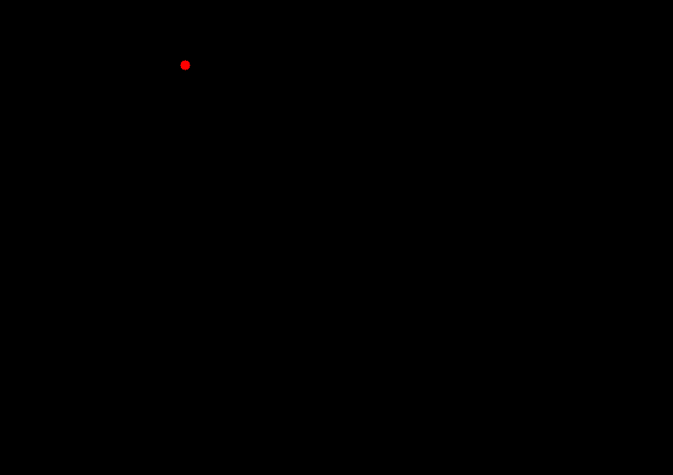

SVMSGD Interactive Classification
Train with SVMSGD algorithm. The classifier can handle linearly separable 2-class dataset.
Sources:
function varargout = train_svmsgd_demo_gui() % data sz = [594 841]; % [height width] samples = []; % Set of train samples. Contains points on image responses = []; % Set of responses for train samples % create the UI h = buildGUI(); onHelp([],[]); % display instructions if nargout > 0, varargout{1} = h; end function h = buildGUI() %BUILDGUI Creates the UI h = struct(); h.fig = figure('Name','Train SVMSGD', 'Menubar','none', ... 'Position',[200 200 sz(2) sz(1)]); if ~mexopencv.isOctave() %HACK: not implemented in Octave movegui(h.fig, 'center'); end h.ax = axes('Parent',h.fig, 'Units','normalized', 'Position',[0 0 1 1]); img = zeros([sz 3], 'uint8'); if ~mexopencv.isOctave() h.img = imshow(img, 'Parent',h.ax); else %HACK: https://savannah.gnu.org/bugs/index.php?45473 axes(h.ax); h.img = imshow(img); end % register mouse button handlers and change cursor set(h.fig, 'Pointer','cross', 'WindowKeyPressFcn',@onType, ... 'WindowButtonDownFcn',@onMouseDown); end function onHelp(~,~) %ONHELP Display usage help dialog hd = helpdlg({ 'Left-click the mouse to add a positive sample.' 'Right-click the mouse to add a negative sample.' 'Hot keys:' ' h: usage dialog' ' r: reset' ' s: save current output image as PNG image' ' e: export current data as MAT-file' ' q: quit the program' }, 'Interactive SVMSGD demo'); set(hd, 'WindowStyle','modal'); end function onReset(~,~) %ONRESET Restart from scratch % reset data samples = []; responses = []; % update plot img = zeros([sz 3], 'uint8'); set(h.img, 'CData',img); drawnow; end function onType(~,e) %ONTYPE Event handler for key press on figure % handle keys switch e.Key case 'r' onReset([],[]); case 'h' onHelp([],[]); case 's' fname = [tempname() '.png']; imwrite(img, fname); fprintf('Output saved as "%s"\n', fname); case 'e' uisave({'samples', 'responses'}, 'data.mat'); case {'q', 'escape'} close(h.fig); end end function onMouseDown(~,~) %ONMOUSEDOWN Event handler for mouse down on figure % get current location of mouse pointer p = get(h.ax, 'CurrentPoint'); p = round(p(1,1:2)); % add point to train set with corresponding positive/negative class samples(end+1,:) = p; if strcmp(get(h.fig,'SelectionType'), 'normal') responses(end+1) = +1; else responses(end+1) = -1; end % process (train model and draw results on image) [weights, shift] = doTrain(samples, responses(:)); pts = doFindPointsForLine(sz, weights, shift); img = doRedraw(sz, samples, responses, pts); % update plot set(h.img, 'CData',img); drawnow; end end function [weights, shift] = doTrain(samples, responses) %DOTRAIN Train with SVMSGD algorithm % % [weights, shift] = doTrain(samples, responses) % % ## Input % * __samples__, __responses__ train set % % ## Output % * __weights__, __shift__ vector of decision function of SVMSGD algorithm % weights = []; shift = []; if numel(unique(responses)) < 2 % ensure we have at least one point from each class return; end model = cv.SVMSGD(); model.train(samples, responses); if model.isTrained() weights = model.getWeights(); shift = model.getShift(); display(model) fprintf('%f*x + %f*y + %f = 0\n', weights(1), weights(2), shift); end end function pts = doFindPointsForLine(sz, weights, shift) %DOFINDPOINTSFORLINE Find two points for drawing decision function line (w*x = 0) pts = []; if isempty(weights) return; end % axis-aligned border segments segments = { [sz(2) 0; sz(2) sz(1)]; % right [0 sz(1); sz(2) sz(1)]; % top [0 0; sz(2) 0]; % bottom [0 0; 0 sz(1)] % left }; % test intersection against each segment until we collect two points for i=1:numel(segments) pt = doFindCrossPointWithBorders(weights, shift, segments{i}); if ~isempty(pt) pts(end+1,:) = pt; if size(pts,1) >= 2 return; end end end end function pt = doFindCrossPointWithBorders(weights, shift, seg) %DOFINDCROSSPOINTWITHBORDERS Find intersection of line (w*x = 0) and segment % % (y = HEIGHT, 0 <= x <= WIDTH) or (x = WIDTH, 0 <= y <= HEIGHT) % % decision function line equation: w(1)*x + w(2)*y + s = 0 % border equations either x=c or y=c % xmn = min(seg(:,1)); xmx = max(seg(:,1)); ymn = min(seg(:,2)); ymx = max(seg(:,2)); pt = []; if xmn == xmx && weights(2) ~= 0 % intersect with vertical border x = xmn; y = floor(-(weights(1) * x + shift) / weights(2)); if ymn <= y && y <= ymx pt = [x y]; end elseif ymn == ymx && weights(1) ~= 0 % intersect with horizontal border y = ymn; x = floor(-(weights(2) * y + shift) / weights(1)); if xmn <= x && x <= xmx pt = [x y]; end end end function img = doRedraw(sz, samples, responses, pts) %DOREDRAW Redraw point set and decision function line (w*x = 0) img = zeros([sz 3], 'uint8'); if ~isempty(samples) img = cv.circle(img, samples(responses==+1,:), 6, ... 'Color',[255 0 0], 'Thickness','Filled'); img = cv.circle(img, samples(responses==-1,:), 6, ... 'Color',[0 0 255], 'Thickness','Filled'); end if ~isempty(pts) img = cv.line(img, pts(1,:), pts(2,:), 'Color',[0 255 0]); end end